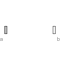

PartialLineForceBase model for massless line force elements |

|
Information
This information is part of the Modelica Standard Library maintained by the Modelica Association.
All massless line force elements should be based on this base model. This model defines frame_a and frame_b, computes the (guarded) relative distance s and provides the force and torque balance of the cut-forces and cut-torques at frame_a and frame_b, respectively. In sub-models, only the line force f, acting at frame_b on the line from frame_a to frame_b, as a function of the relative distance s and its derivative der(s) has to be defined. Example:
model Spring parameter Real c "spring constant", parameter Real s_unstretched "unstretched spring length"; extends Modelica.Mechanics.MultiBody.Interfaces.PartialLineForce; equation f = c*(s-s_unstretched); end Spring;
Parameters (3)
| s_small |
Value: 1e-10 Type: Distance (m) Description: Prevent zero-division if distance between frame_a and frame_b is zero |
|---|---|
| fixedRotationAtFrame_a |
Value: false Type: Boolean Description: = true, if rotation frame_a.R is fixed (to directly connect line forces) |
| fixedRotationAtFrame_b |
Value: false Type: Boolean Description: = true, if rotation frame_b.R is fixed (to directly connect line forces) |
Connectors (2)
Components (1)
| world |
Type: World |
|---|
Extended by (3)
|
Modelica.Mechanics.MultiBody.Forces Linear spring and linear damper in series connection |
|
|
Modelica.Mechanics.MultiBody.Forces Linear spring and linear damper in parallel |
|
|
Modelica.Mechanics.MultiBody.Forces Linear (velocity dependent) damper |